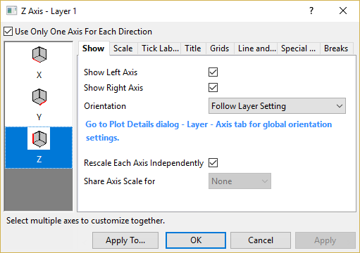

Diese Registerkarte wird verwendet, um zu bestimmen, ob eine festgelegte Achse gezeigt oder verborgen wird. Außerdem wird die Achsenausrichtung festgelegt.
| Allgemeine 2D-Diagramme |
|---|
| Allgemeine 3D-Diagramme |
|  |
| 2D-Wasserfalldiagramme und 2D-Ternärdiagramme |
Legen Sie fest, ob die Achsen in der aktuellen Richtung angezeigt werden sollen. Sie können die linke und die rechte Y-Achse oder die untere und die obere Achse auswählen.
Wählen Sie diese Option, um Achsen in vertikaler Richtung unabhängig neu zu skalieren. Sobald sie ausgewählt ist, sind die linke und rechte Y-Achse unabhängig voneinander. Sie können das rechte und linke Symbol im linken Bedienfeld auswählen und zu den Registerkarten Skalierung, Gitternetz, Referenzlinien und Unterbrechungen gehen, um die Achsenelemente jeweils benutzerdefiniert anzupassen.
Hinweis: Wenn die Option Daten zeichnen auf auf der Registerkarte Anzeige im Dialog Details Zeichnung auf Rechte Y-Achse gesetzt ist, werden diese drei Optionen (Linke Achse zeigen, Rechte Achse zeigen und Jede Achse unabhängig neu skalieren) gleichzeitig aktiviert.
Wählen Sie diese Option und geben Sie einen Wert für die vertikale Position in das Bearbeitungsfeld ein, um die rechte Y-Achse neu zu skalieren und so die linke und rechte Y-Achse bei dieser vertikalen Position auszurichten. Die rechte Y-Achse wird neu skaliert, um den gesamten Bereich der abhängigen Zeichnungen zu zeigen.
Wählen Sie diese Option, um das Längenverhältnis von X- und Y-Achsen (die Breite und Höhe des Layerrahmens) festzulegen, so dass das Seitenverhältnis der tatsächlichen X- und Y-Skalierungen beibehalten wird, wenn sich die Layergröße ändert. Wenn diese Option aktiviert ist, können Sie den Verhältniswert in das Bearbeitungsfeld eingeben.
Beachten Sie, dass dieses Kontrollkästchen verborgen ist, wenn es eine Achsenunterbrechung auf einer der Achsen gibt.
Diese Option wird mit der gleichen Option auf der Registerkarte Größe im Dialog Details Einzelheiten synchronisiert. Weitere Einzelheiten finden Sie auf dieser Dokumentseite.
Wählen Sie Achsenskalierung für alle Achsen teilen, um die Einstellungen auf der Registerkarte Skalierung zwischen X- und Y-Achsen zu teilen.
Wählen Sie Achsenstil für alle Achsen teilen, um die Einstellungen des Achsenstils auf alle Achsem im gleichen Layer zu übertragen. Die folgenden Achsenstile werden hierbei unterstützt:
Wenn das Kontrollkästchen Nur eine Achse für jede Richtung verwenden aktiviert ist, wird das Bedienelement eine Auswahlliste Achse zeigen, in der Sie auswählen können, ob und welche Achse für die ausgewählte(n) Achse(n) gezeigt werden soll(en).
Wenn das Kontrollkästchen Nur eine Achse für jede Richtung verwenden deaktiviert ist, wird das Bedienelement zwei Kontrollkästchen (Vordere/Hintere/Untere/Obere/Linke/Rechte Achse zeigen). Sie können bestimmen, ob eine Achse mit Hilfe des jeweiligen Kontrollkästchens gezeigt/verborgen werden soll. Die ausgewählten Achsen werden auf den Registerkarten Beschriftungen der Hilfsstriche, Titel, Linie und Hilfsstriche sowie Spezielle Hilfsstriche angezeigt, damit Sie die Anzeige dieser Achsen benutzerdefiniert anpassen können.
Hinweis: Wenn das Kontrollkästchen Nur eine Achse für jede Richtung verwenden deaktiviert ist, werden aus dem Element bei der Zh-Achse im 3D-Ternärdiagramm drei Kontrollkästchen (ZhX/ZhY/ZhZ-Achse zeigen).
Dieses Auswahlmenü wird verwendet, um die Ausrichtung der Beschriftungen der Achsenhilfsstriche, Titel, Hilfsstriche etc. für die ausgewählte(n) Achse(n) festzulegen. Die globale Steuerung aller Achsen findet auf der Registerkarte Achse im Dialog Details Zeichnung (Layereben) statt, wie auch im Dialoghinweis zu sehen.
Eine detailliertere Erläuterung jeder Option finden Sie in der Origin-Hilfe der Registerkarte Achse.
Bei XYZ-Diagrammen dürfen Sie jede Z-Achse unabhängig neu skalieren. Bei XYY-Diagrammen dürfen Sie jede Y-Achse unabhängig neu skalieren. Wenn Sie dieses Kontrollkästchen aktiviert haben, werden zwei ZY-Achsen auf der Registerkarte Skalierung gezeigt, und Sie können zwei verschiedene 3D-Diagramm im gleichen 3D-Layer and zeichnen und sie in ihrem eigenen ZY-Achsenbereich zeigen. Die Registerkarten Gitternetze und Unterbrechungen zeigen auch zwei ZY-Achsen, um das unabhängige Hinzufügen von Gitternetzlinien und Achsenunterbrechungen zu ermöglichen.
Hinweis: Egal, ob Sie die Option Nur eine Achse für jede Richtung verwenden aktiviert haben, durch Aktivieren dieses Kontrollkästchens wird die Auswahlliste Achsen zeigen auf die Kontrollkästchen Linke/Rechte Achse zeigen gekürzt.
Deaktivieren Sie das Kontrollkästchen Jede Achse unabhängig neu skalieren auf der Z-Achse. Sie können die Einstellungen auf der Registerkarte Skalieren für X- und Y-Richtung, Y- und Z-Richtung, X- und Z-Richtung oder alle Achsen teilen.
Es gibt zwei Kontrollkästchen (Vordere/Hintere/Untere/Obere/Linke/Rechte Achse zeigen). Sie können bestimmen, ob eine Achse mit Hilfe des jeweiligen Kontrollkästchens gezeigt/verborgen werden soll.